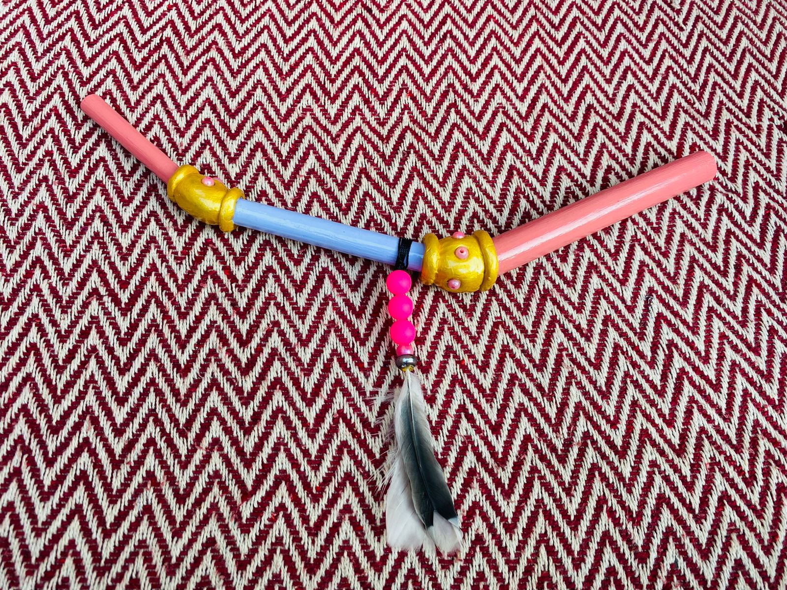
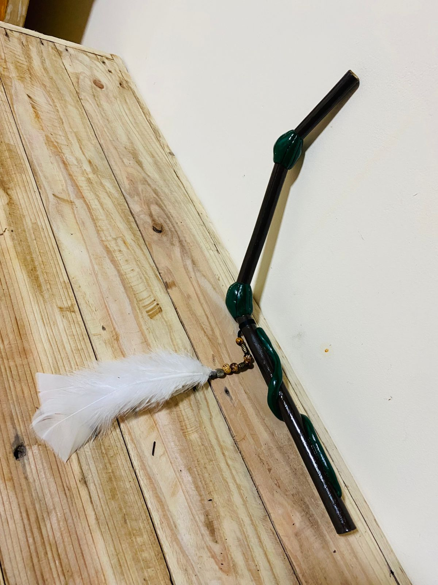

Instrumentos de poder feitos à mão com respeito e tradição
Solicitar CatálogoO Tepi é um sopro de cura. Instrumento utilizado para aplicar o Rapé em outra pessoa, permitindo a transmissão de energia.
Medicina ancestral que proporciona clareza mental, limpeza física e alinhamento energético.
Cada peça é única, feita com materiais naturais e consagrada com respeito.


Enviamos para todo o Brasil
Telefone: (11) 91116-1774